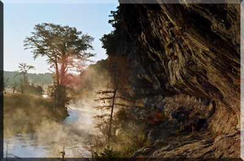

|
 |
Climb up Medina Bluffs
By g.l. bass
( the ghostbear still lives)
8/88-ed. 2/92 & 5/05
for David Wagoner
Odd,
Deep cold June nights
Leave slowly,
Under a mask of
Dense morning fog.
Erie steam in sheets
Of river clouds rise,
Rolling skyward
Like great beasts
On hind feet
They climb up the bluffs
Then hang suspended,
And disappear
Waiting the sun’s promise
Hidden below the
Distant awakening purple
Horizon.
Hours,
Waded waist deep,
The Medina’s blood runs
Crystal clear and ice cold
Seeped up through hard rock
Crevices from ancient aquifers
Miles below.
Mammoth granite boulders
Split and fallen from bluffs
Hundreds of feet above,
Block narrow river banks,
Cluster into dams,
And turn rushing rapids
To rampant whitewater
Roaring down through
Twisted narrow gorge.
The river pours down miles,
Aisles of narrow walls,
50, 70, 100 feet above
Hard rock rapid’s floor.
The beginning:
Up over the slick backs
Of rough stone boulders,
Through twisted, tangle of
Knarled downed oak limbs,
Roots, cutthorns,
Cedars and vines,
Is the easy part of the climb.
Tips of fingers stuck,
Grasp and grab,
Thin line, sharp cracks,
Along the face of bluff
Walls.
Toes catch, slip,
Dig and catch again.
On all fours,
Lizard like,
Along 6 inch edges,
Then stand upright,
Bend over,
Squeeze through,
One step back,
Spring from the edge,
Leap across,
Reach in midair,
Ledge to ledge,
Below you 20 feet,
Yet another ledge,
Kick a stone and count
To ten,
You can hear the muffled
Instant splash,
Fifty feet below,
Before the roar
Of rapids
Reminds you again,
You are alone.
The cave’s lips jut
Just out,
A belt line,
Below the pregnant
Black belly of the
Cliff’s bluff,
A dark womb,
Room enough
For two men,
Flat backed
You stick
Your feet
Down
Into its
Slanted hole,
Drops
Of water trickle
And slide
Into the cave’s corner
Then drip
Over the lip
And fall into the river below.
Your head hung
Over the edge,
Below the rotund
Over hang
You cannot see
The sun,
Now hot and full
In the noon day
Sky.
50 feet above the river,
etches of ancient floods,
bands of red and brown,
You rub your hand over
Rugged cuts and count
The grooves
Of each deep flood.
Fossils entombed here
Tell you,
Once this was the shore
Where the river rapids roared,
Two miles across the canyon
Rampant whitewater ran wide,
A vein of an ancient sea.
This river,
Now falls far below,
Twists,
Turns, crisscrosses
Texas hard rock country,
And finally empties into a lake
Held by poured cement
Of a man made dam.
Your eyes closed,
It is as if you flow
Back down,
With the wind,
Into the womb
Of this ancient
River.
Hidden,
Our of sight,
You are drawn deep
With the melody
Of the rapid’s rising song.
You sink as if,
Out of who you are,
This place pulls you
To the bottom
Of its ancient
Limestone cavity.
The ghosts of warriors,
Huddled round a small fire,
They tap and grind
Rock on rock,
Arrow and spear points
Wound round taut
With strips of dried skin.
They grip rough hewn
Hatchets,
They raise their voices
To the night sky,
The song of the hunt
About to begin.
You lay back,
The song of the river
Pours over you.
On your belly,
Head over the ledge,
50 feet below,
You try and retrace
Your climb.
In slow breaths,
You suck in deep,
The moist, cool air.
Here,
This place,
Cypress lined,
Their heads in the sky,
Treetop high,
You’ve come to grips
With this river’s passion.
Like a birthmark
You can’t explain,
It chisels
And cuts ancient its claim
Deep within you.
A longing past pain,
Wrapped tight
Round the pit
Of who you are,
As if you were born
Out of this dark river womb,
Forever you wear the mark
Of its spirit
Like a zealous wound.
How far,
How hard,
How deep,
Must you climb?
Each trace of blood
Torn from you
That you leave behind,
Binds you,
Washes you clean,
As if the pain
And the bleed into the river
Sets you free of life’s debris
And stain.
Here,
High above the rapids,
Deep inside
The river’s dark cave,
You find time
Has no claim on you.
As you climb out
And over the ledge,
It is as if
You have gained
Some part of your birth
Back
Again.
Forever after,
Even though years
And thousands of Miles away,
You close your Eyes,
Up from the pit of Who you are,
The climb,
The passion of the Rapids,
The will of the Medina
Remains
The same.
|